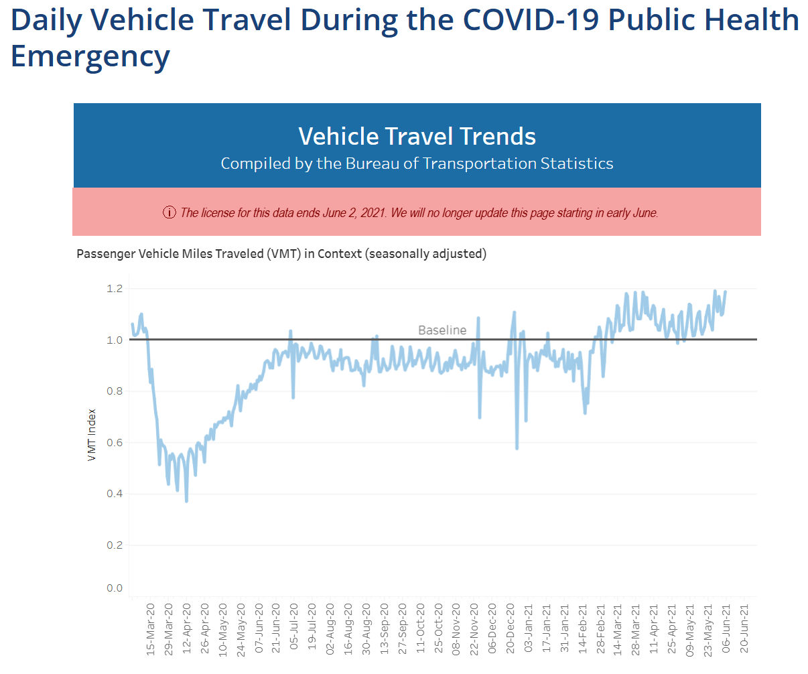

As of October 24th, 2025 I found bad data in the main dataset that made me switch gears.
I’ll try to pick up on this once I either find better data or get clarity from New York Open Data.
Introduction
For this project, I’ve decided to use New York City Open Data to look at car traffic into Manhattan from January 2020 through June 2025.
This timespan covers two major events in NYC’s recent history:
The 2020-21 COVID pandemic
Congestion Pricing
In early 2020, the United States along with the rest of the world experienced the COVID Health Pandemic, which caused massive changes and disruptions to the normal, expected flow of life. In terms of vehicle travel, according to the Bureau of Transportation Statistics, we saw a massive dip in vehicle travel for the first few months of the pandemic and stayed below their expected travel baseline until the summer of 2020, only surpassing it regularly in early 2021.

Vehicle Travel Trends via the Bureau of Transportation Statistics
In early January 2025, New York City enacted Congestion Pricing, where vehicles would be tolled for entering Manhattan via car. This toll is $9 during peak period (5AM to 9PM on weekdays) and $2.25 otherwise. The debates over congestion pricing, its enacting and its merits are still ongoing today, the fact remains it’s currently in place, with plans to gradually increase the tolls over the next 6 years until it caps out at $15 in 2031.1:
So, with two major events related to car-traffic in NYC, what does the data say so far?
In this project, I look at the overall time trends, then specifically the time trends during what’s considered “Peak” travel hours into NYC. I hope to answer the following in the context of a Time Series problem:
What does car traffic into Manhattan look like right now?
Can we forecast what car traffic might look like for the next 365 days?
NYC Open Data
To answer this question, I’ll be using NYC Open Data, a free public database published by New York City agencies and other partners.
The dataset Automated Traffic Volume Counts, maintained by the New York City Department of Transportation (NYC DOT) uses Automated Traffic Recorders (ATR) to collect traffic sample volume counts at bridge crossings and roadways. These counts do not cover the entire year, and the number of days counted per location may vary from year to year. 2
Data Dictionary
The overall dataset spans from early February 2020 through late June 2025, is updated regularly (last update September 20, 2025) and contains 1.84M records and 14 columns:
Column Name
Column Description
Term, Acronym, or Code Definitions
Additional Notes
RequestID
A unique ID that is generated for each counts request.
boro
Lists which of the five administrative divisions of New York City the location is within, written as a word.
Brooklyn Bronx Manhattan Staten Island Queens
yr
The two-digit year portion of the date when the count was conducted.
m
The two-digit month portion of the date when the count was conducted.
d
The two-digit day portion of the date when the count was conducted.
hh
The two-digit hour portion of the time when the count was conducted.
mm
The two-digit start-minute portion of the time when the count was conducted.
vol
The total sum of count collected within a 15-minute increment.
segmentId
The ID that identifies each segment of a street in the LION street network version 14.
WktGeom
A text markup language for representing vector geometry objects on a map and spatial reference systems of spatial objects.
street
The ‘On Street’ where the count took place.
fromSt
The ‘From Street’ where the count took place.
toSt
The ‘To Street’ where the count took place.
direction
The text-based direction of traffic where the count took place.
NB = Northbound SB = Southbound EB = Eastbound WB = Westbound NS = North/South EW = East/West
Data Inspection
Below is a sample of the raw data, pulling with parameters
Code
# packagesif (!require("dplyr")) install.packages("dplyr")if (!require("ggplot2")) install.packages("ggplot2")if (!require("lubridate")) install.packages("lubridate")if (!require("RSocrata")) install.packages("RSocrata")if (!require("scales")) install.packages("scales")if (!require("sf")) install.packages("sf")if (!require("stringr")) install.packages("stringr")#librarieslibrary(dplyr)library(ggplot2)library(lubridate)library(RSocrata)library(scales)library(sf)library(stringr)# set API keySys.setenv(NYC_OD_KEY=readLines(".secrets"))endpoint <-"https://data.cityofnewyork.us/resource/7ym2-wayt.json"# traffic data# query to pull only Manhattan dataqry <-paste0( endpoint,"?$select=*","&$where=boro='Manhattan' AND yr >= 2020","&$order=yr,m,d,hh,mm")# read query#traffic_raw <- read.socrata(qry)#### for project pull ####traffic_raw <-read.csv("data/TS1/traffic_data.csv")# display raw datahead(traffic_raw,3) |> DT::datatable(options=list(dom='tip',traffic_raw=3 ))
Limitations
As noted by NYC DOT:
These counts do not cover the entire year, and the number of days counted per location may vary from year to year.
What this means is that if we were to try and count the data usage across the whole city, we’d only be getting partial snapshots for various locations at various points in time.
Code
# get the location points for just below 60th streetlocs <- traffic_raw |>distinct(boro, street, fromst, tost, wktgeom)pts <-st_as_sf( locs,wkt="wktgeom",crs=2263) |>st_transform(4326)xy <-st_coordinates(pts)pts$lon <- xy[,1]pts$lat <- xy[,2]lat_60th <-40.7681cpz_geo <- pts |>filter( boro =="Manhattan", lat <= lat_60th,between(lon, -74.03, -73.93) # west/east bounds of Manhattan )# exclude streets that are in the exempt zones of Manhattanexclude_re <-"(?i)\\bFDR\\b|F\\.D\\.R|FRANKLIN D ROOSEVELT|WEST SIDE|HENRY HUDSON|ROUTE\\s*9A|\\b9A\\b|\\bWEST ST\\b|WEST STREET|HUGH L\\.? CAREY|BROOKLYN\\s*-?\\s*BATTERY|BATTERY TUNNEL"cpz_clean <- cpz_geo |>filter(!str_detect(coalesce(street, ""), exclude_re),!str_detect(coalesce(fromst, ""), exclude_re),!str_detect(coalesce(tost, ""), exclude_re) )df <- traffic_raw |>semi_join(st_drop_geometry(cpz_clean),by =c("boro", "street", "fromst", "tost"))traffic_raw |>group_by(street) |>count(name="Value Counts") |>mutate(street =str_to_title(street)) |>rename(Street = street) |>arrange(desc(`Value Counts`)) |> DT::datatable(options=list(traffic_raw=5 ))
The entire database where boro='Manhattan' has 74 unique street values with varying counts.
When further filtering our data to just include the congestion zone areas:
Below 60th Street
Excluding the following areas:
FDR Drive
West Side Highway/Route 9A
Hugh L. Carey Tunnel
We lose a little less than half of the Manhattan values, leaving 39 unique street values.
t1<- traffic_raw |>group_by(street) |>count(name="Value Counts") |>mutate(street =str_to_title(street)) |>rename(Street = street) |>arrange(desc(`Value Counts`))t2<-df |>group_by(street) |>count(name="Value Counts") |>mutate(street =str_to_title(street)) |>rename(Street = street) |>arrange(desc(`Value Counts`))c1<-format(sum(t1$`Value Counts`),big.mark=",")c2<-format(sum(t2$`Value Counts`),big.mark=",")diff <- (sum(t1$`Value Counts`) -sum(t2 $`Value Counts`))diff <-format(diff, big.mark=",")cat(sprintf("The overall Manhattan dataset has %s value counts while the CPZ-only data only has %s value counts, a difference of %s", c1, c2, diff))
The overall Manhattan dataset has 80,537 value counts while the CPZ-only data only has 29,377 value counts, a difference of 51,160
This will lead to huge problems with any inference or modeling that we try to do.
Possible Solutions
The simplest solution would just be to use the whole Manhattan dataset, though that doesn’t seem super reasonable since congestion tries to focus on just below 60th Street.
Including highways and expressways could also help, because even though it’s not neccesary to go through the congestion zone to get from one to the other, it is something that can happen (e.g.: driving from the exit from the Brooklyn Bridge Northbound to the West Side Highway would take you directly through the congestion zone, even if only temporarily).